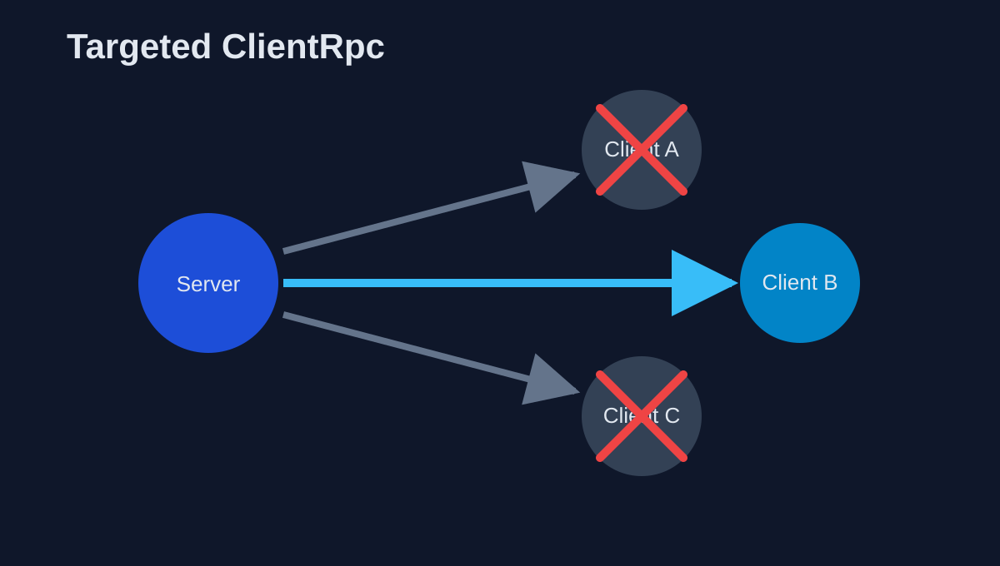
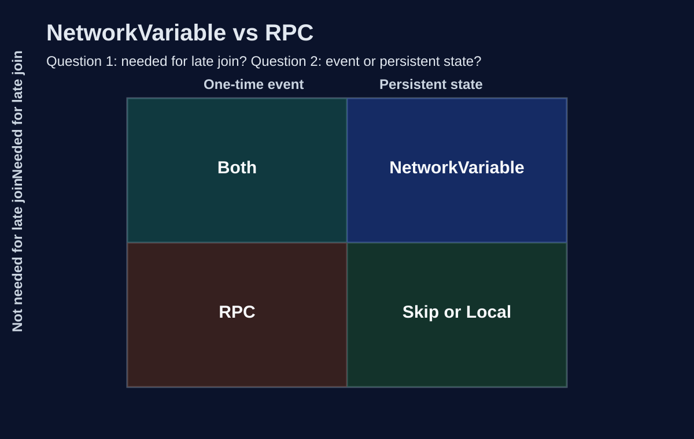
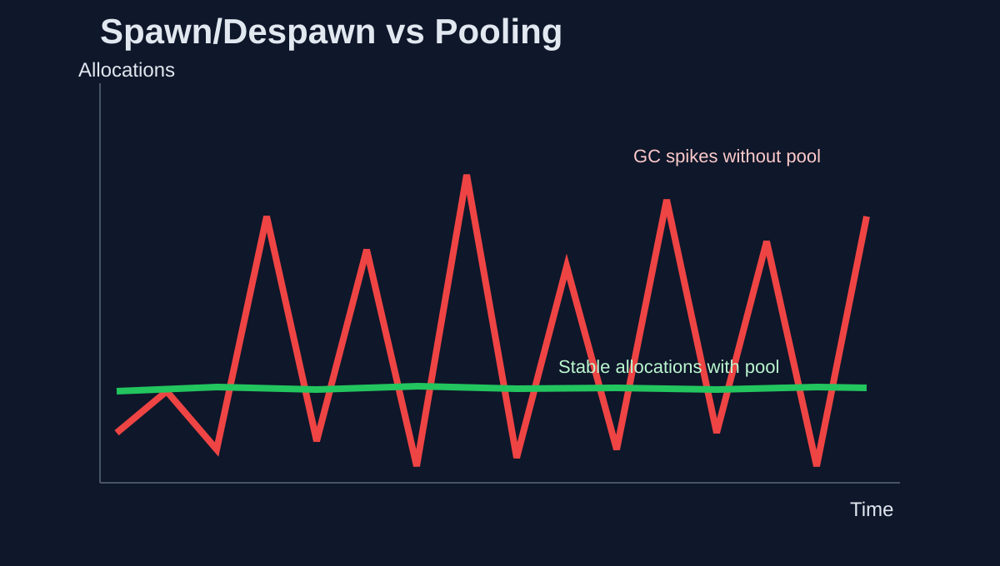
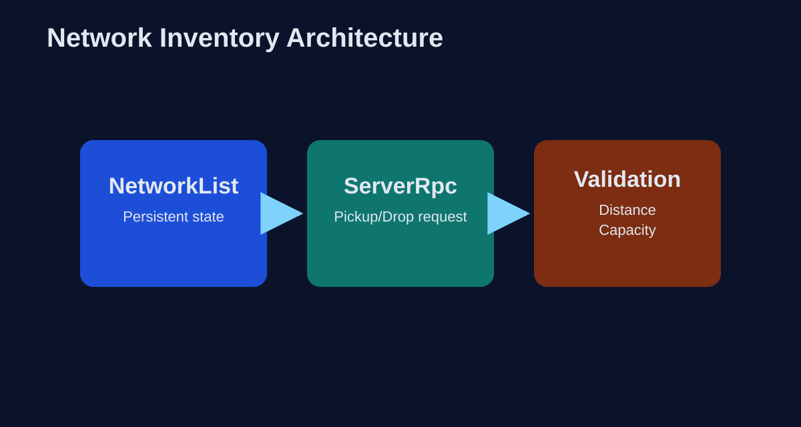
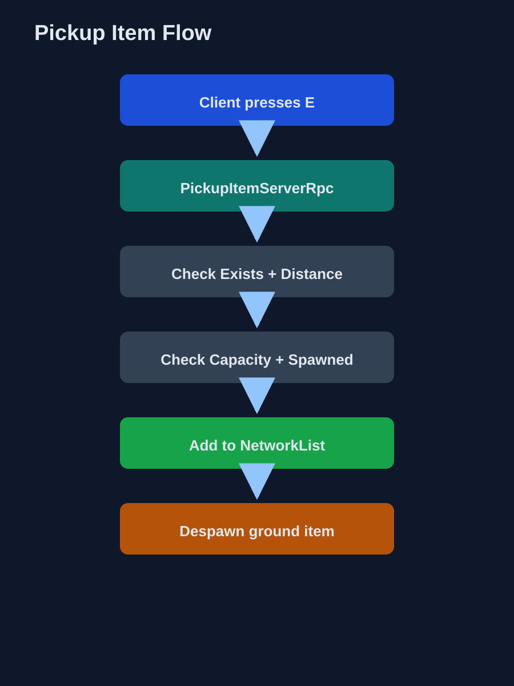
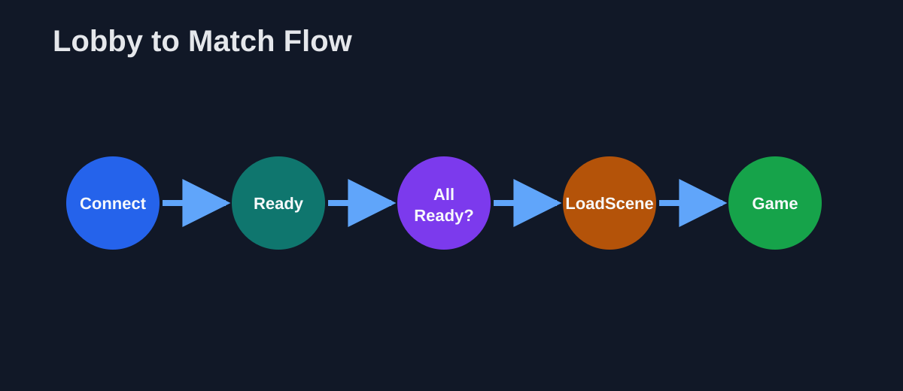
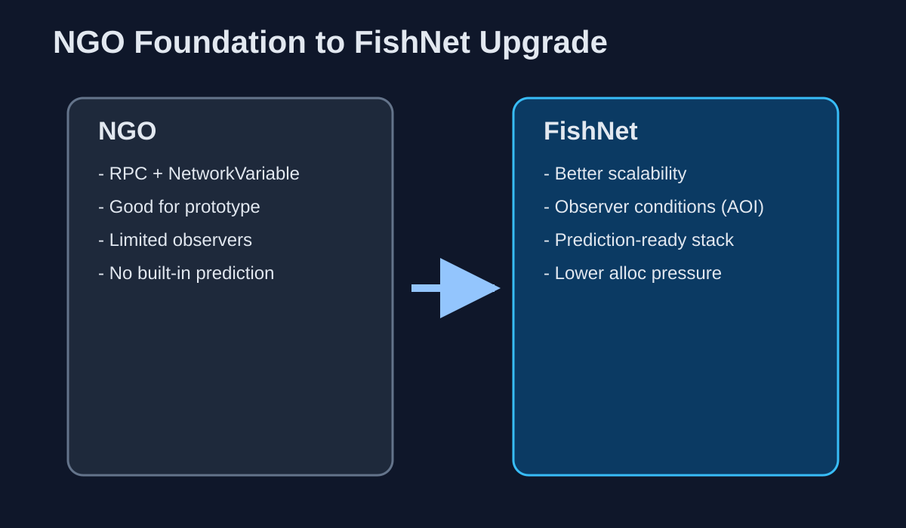

Материалы лекции
Скачать PDF-версию лекции:
Завершение Блока 1 — полный арсенал NGO перед миграцией на FishNet
Эта лекция закрывает все оставшиеся продвинутые паттерны Unity Netcode for GameObjects. Студент уже написал стрельбу с серверной валидацией. Теперь — Targeted RPC, Object Pooling, сетевой инвентарь, лобби с готовностью игроков и сетевая загрузка сцен.
Скачать PDF-версию лекции:
За три лекции мы прошли путь от «что такое пакет» до полного цикла стрельбы с серверной валидацией. Лекция 4 — финал Блока 1: закрываем все оставшиеся продвинутые паттерны NGO, после чего будем готовы к миграции на FishNet.
NetworkVariable, ServerRpc / ClientRpc, IsOwner, NetworkTransform, ChangeOwnership, SpawnWithOwnership, guard-клозы валидации.
Отправлять RPC одному клиенту, переиспользовать объекты через пул, строить инвентарь на NetworkList, управлять лобби и загрузкой сцен по сети.
К полному набору инструментов NGO: все типы RPC, Object Pooling, сетевой инвентарь, готовность игроков, Scene Management — перед переходом на FishNet.
INetworkPrefabInstanceHandler, серверный и клиентский пул.NetworkList, подбор/выброс предметов с серверной валидацией.Если вы можете объяснить, зачем нужны 4 guard-клоза в ShootServerRpc и чем Spawn() отличается от SpawnWithOwnership() — вы готовы к этой лекции.
В Лекциях 1 и 3 мы разобрали ServerRpc (клиент → сервер) и ClientRpc (сервер → все). Но что если нужно отправить событие только одному конкретному клиенту?

// Targeted ClientRpc — только указанным клиентам
[ClientRpc]
void ShowNotificationClientRpc(string message,
ClientRpcParams rpcParams = default)
{
ShowUI(message);
}
// Вызов на сервере — передаём конкретного получателя
void NotifyPlayer(ulong clientId, string msg)
{
ClientRpcParams targetParams = new ClientRpcParams {
Send = new ClientRpcSendParams {
TargetClientIds = new ulong[] { clientId }
}
};
ShowNotificationClientRpc(msg, targetParams);
}ClientRpcParams.Send.TargetClientIds — массив ID клиентов-получателей. Если массив пуст или параметр не задан — RPC идёт всем (обычное поведение ClientRpc).
Targeted RPC экономит трафик: если в игре 16 человек, а уведомление нужно одному — зачем слать его пятнадцати другим?
В Лекции 2 мы кратко сравнили «события vs state». В Лекции 3 показали конкретный пример со стрельбой. Теперь систематизируем в формальную матрицу.

NetworkVariable<bool> IsAlive + ClientRpc PlayDeathEffectClientRpc().NetworkVariable для текущего оружия + RPC для анимации переключения.NetworkVariable<bool> IsOpen, чтобы новый клиент увидел открытую дверь.Событие через NV: лишний трафик — NV синхронизирует значение постоянно, даже когда событие произошло один раз.
State через RPC: пропуск данных — клиент, подключившийся позже, не получит RPC и не увидит текущее состояние.
По умолчанию RPC в NGO — reliable (гарантированная доставка с подтверждением). Но для частых некритичных событий потеря одного пакета несущественна.
// Reliable (по умолчанию) — гарантия доставки
[ServerRpc]
void ImportantActionServerRpc() { }
// Unreliable — без подтверждения, быстрее
[ServerRpc(Delivery = RpcDelivery.Unreliable)]
void FootstepSoundServerRpc(Vector3 position) { }
[ClientRpc(Delivery = RpcDelivery.Unreliable)]
void SpawnBulletTrailClientRpc(Vector3 from, Vector3 to) { }Экономия: Reliable требует ACK-пакет на каждый RPC. При 60 событиях/сек — это 60 лишних ACK. Unreliable убирает эти подтверждения.

В Лекции 3 мы спавнили снаряды через Instantiate + Spawn. В реальном шутере это 10–30 снарядов в секунду. Каждый:
NetworkObject в сети.При 16 игроках — сотни аллокаций в секунду → GC spikes → фризы.
Вместо создания и удаления — активируем и деактивируем. Объекты создаются один раз при старте (pre-warming) и переиспользуются.

Instantiate → Spawn → Despawn → Destroy. Каждый раз аллокация и GC.

Активировать → использовать → деактивировать → вернуть. Ноль аллокаций в рантайме.
NGO позволяет подменить стандартное создание/удаление объектов через интерфейс INetworkPrefabInstanceHandler.
public class ProjectilePoolHandler : INetworkPrefabInstanceHandler
{
private Queue<NetworkObject> pool = new();
private NetworkObject prefab;
public ProjectilePoolHandler(NetworkObject prefab, int preWarmCount)
{
this.prefab = prefab;
// Pre-warming: создаём объекты заранее
for (int i = 0; i < preWarmCount; i++)
{
var obj = Object.Instantiate(prefab);
obj.gameObject.SetActive(false);
pool.Enqueue(obj);
}
}
// Вызывается вместо Instantiate
public NetworkObject Instantiate(ulong ownerClientId,
Vector3 position, Quaternion rotation)
{
NetworkObject obj = pool.Count > 0
? pool.Dequeue()
: Object.Instantiate(prefab);
obj.transform.SetPositionAndRotation(position, rotation);
obj.gameObject.SetActive(true);
return obj;
}
// Вызывается вместо Destroy
public void Destroy(NetworkObject networkObject)
{
networkObject.gameObject.SetActive(false);
pool.Enqueue(networkObject);
}
}// При старте сервера
var handler = new ProjectilePoolHandler(projectilePrefab, poolSize: 50);
NetworkManager.Singleton.PrefabHandler.AddHandler(
projectilePrefab, handler);Формула: maxPlayers × fireRate × maxLifetime. Для 16 игроков, 2 выстрела/сек, время жизни 3 сек: 16 × 2 × 3 = 96 объектов.
Pre-warming (создание пула при старте) обязательно. Ленивое создание в рантайме — снова аллокации и GC. Создавайте всё заранее.
Отдельно от сетевого пула нужен локальный пул для VFX: вспышки, следы попаданий, частицы. Эти объекты не требуют NetworkObject — они порождаются локально через ClientRpc.
// Стандартный Unity ObjectPool для VFX
private ObjectPool<ParticleSystem> hitEffectPool;
void Awake()
{
hitEffectPool = new ObjectPool<ParticleSystem>(
createFunc: () => Instantiate(hitEffectPrefab),
actionOnGet: fx => fx.gameObject.SetActive(true),
actionOnRelease: fx => fx.gameObject.SetActive(false),
defaultCapacity: 20,
maxSize: 50
);
}
// Вызывается из ClientRpc (Лекция 3)
[ClientRpc]
void PlayHitEffectClientRpc(Vector3 position)
{
var fx = hitEffectPool.Get();
fx.transform.position = position;
fx.Play();
StartCoroutine(ReturnToPool(fx, 2f));
}
IEnumerator ReturnToPool(ParticleSystem fx, float delay)
{
yield return new WaitForSeconds(delay);
hitEffectPool.Release(fx);
}Два пула в проекте: серверный (INetworkPrefabInstanceHandler) для снарядов, клиентский (ObjectPool) для VFX. Они не пересекаются.

Инвентарь объединяет знания из Лекций 2, 3 и текущей: NetworkVariable / NetworkList для хранения состояния, ChangeOwnership для подбора, ServerRpc для запросов действий.
NetworkList отправляет дельту: «добавлен элемент в индекс 3».NetworkVariable<массив> отправляет весь массив при любом изменении.// Структура слота инвентаря
public struct InventorySlot : INetworkSerializable, IEquatable<InventorySlot>
{
public ushort ItemId; // ID предмета (0 = пусто)
public byte Quantity; // Количество
public void NetworkSerialize<T>(BufferSerializer<T> s) where T : IReaderWriter
{
s.SerializeValue(ref ItemId);
s.SerializeValue(ref Quantity);
}
public bool Equals(InventorySlot other)
=> ItemId == other.ItemId && Quantity == other.Quantity;
}
// Инвентарь как NetworkList
public NetworkList<InventorySlot> Inventory;InventorySlot реализует INetworkSerializable — тот самый паттерн кастомной сериализации, который мы разбирали на Лекции 2. Порядок полей обязателен!

[ServerRpc(RequireOwnership = false)]
void PickupItemServerRpc(NetworkObjectReference itemRef,
ServerRpcParams rpcParams = default)
{
// 1. Предмет существует?
if (!itemRef.TryGet(out NetworkObject itemObj)) return;
// 2. Расстояние допустимо?
float dist = Vector3.Distance(
transform.position, itemObj.transform.position);
if (dist > 2.5f) return;
// 3. Инвентарь не полон?
if (Inventory.Count >= MaxSlots) return;
// 4. Предмет ещё не подобран? (не despawned)
if (!itemObj.IsSpawned) return;
// Всё ок — добавляем в инвентарь, удаляем с земли
var itemData = itemObj.GetComponent<PickupItem>();
Inventory.Add(new InventorySlot {
ItemId = itemData.ItemId,
Quantity = itemData.Quantity
});
itemObj.Despawn(true);
}Сравните с 4 guard-клозами из ShootServerRpc (Лекция 3): там — Owner, Alive, Cooldown, Direction. Здесь — Exists, Distance, Capacity, NotTaken. Принцип тот же: клиент просит, сервер валидирует.
Выброс: клиент запрашивает → сервер спавнит предмет в позиции игрока, удаляет из NetworkList.
Передача: Targeted ClientRpc для подтверждения обоим участникам.
[ServerRpc]
void DropItemServerRpc(int slotIndex)
{
if (slotIndex < 0 || slotIndex >= Inventory.Count) return;
InventorySlot slot = Inventory[slotIndex];
if (slot.ItemId == 0) return;
// Спавн предмета на земле
var obj = Instantiate(GetPrefab(slot.ItemId),
transform.position + transform.forward, Quaternion.identity);
obj.GetComponent<NetworkObject>().Spawn();
// Удаление из инвентаря
Inventory.RemoveAt(slotIndex);
}В Лекции 1 мы подключались кнопками Host/Client, но не обрабатывали события. Теперь — полноценный жизненный цикл соединения.
public class ConnectionManager : NetworkBehaviour
{
private Dictionary<ulong, PlayerData> players = new();
public override void OnNetworkSpawn()
{
if (!IsServer) return;
NetworkManager.OnClientConnectedCallback += OnClientConnected;
NetworkManager.OnClientDisconnectCallback += OnClientDisconnected;
}
void OnClientConnected(ulong clientId)
{
Debug.Log($"Клиент {clientId} подключился");
players[clientId] = new PlayerData { ClientId = clientId };
UpdatePlayerCountClientRpc(players.Count);
}
void OnClientDisconnected(ulong clientId)
{
Debug.Log($"Клиент {clientId} отключился");
players.Remove(clientId);
// Чистка: удаление данных, уведомление остальных
UpdatePlayerCountClientRpc(players.Count);
}
public override void OnNetworkDespawn()
{
if (!IsServer) return;
NetworkManager.OnClientConnectedCallback -= OnClientConnected;
NetworkManager.OnClientDisconnectCallback -= OnClientDisconnected;
}
}NetworkManager.Shutdown(). Сервер получает OnClientDisconnect мгновенно.
public class LobbyManager : NetworkBehaviour
{
public NetworkVariable<int> PlayerCount = new(0);
// Каждый игрок имеет свой флаг готовности
private Dictionary<ulong, bool> readyStates = new();
[ServerRpc(RequireOwnership = false)]
public void SetReadyServerRpc(bool isReady,
ServerRpcParams rpcParams = default)
{
ulong clientId = rpcParams.Receive.SenderClientId;
readyStates[clientId] = isReady;
// Проверяем: все ли готовы?
if (readyStates.Count >= 2 &&
readyStates.Values.All(r => r))
{
StartGame();
}
}
void StartGame()
{
// Сетевая загрузка сцены — все клиенты переходят синхронно
NetworkManager.SceneManager.LoadScene(
"GameScene", LoadSceneMode.Single);
}
}OnClientDisconnect, чистим данные.SceneManager.LoadScene() — только на текущей машине. Другие клиенты не затронуты.NetworkManager.SceneManager.LoadScene() — сервер загружает сцену для ВСЕХ клиентов синхронно.// Только сервер вызывает сетевую загрузку!
if (IsServer)
{
NetworkManager.SceneManager.LoadScene(
"GameScene", LoadSceneMode.Single);
}
// Additive: постоянная сцена (UI, NetworkManager) + загружаемая (карта)
if (IsServer)
{
NetworkManager.SceneManager.LoadScene(
"Arena_01", LoadSceneMode.Additive);
}Scene Management — основа для полного игрового цикла (Лобби → Игра → Результаты), который мы построим в финальном занятии курса.
За четыре лекции мы освоили все ключевые инструменты Unity Netcode for GameObjects:

Лекция 5 — миграция проекта на FishNet. Вы перенесёте то, что уже написали, на новый фреймворк и получите доступ к Observers и Prediction.
На практике 4 вы реализуете полный игровой цикл: Dedicated Server на Linux (WSL), лобби с ожиданием игроков, автостарт матча, экран результатов и возврат в лобби для нового раунда.
Это итоговая практика Блока 1 — она объединяет всё, что было в Лекциях 1–4: подключение, синхронизацию, стрельбу, валидацию и управление сессией.
ClientRpc для отправки событий конкретному клиенту.NetworkVariable, когда RPC, когда оба.INetworkPrefabInstanceHandler и клиентский ObjectPool.NetworkList<InventorySlot> с серверной валидацией подбора.NetworkManager.SceneManager.LoadScene().ClientRpc конкретному клиенту через ClientRpcParams.NetworkVariable, а когда RPC.INetworkPrefabInstanceHandler.NetworkList с серверной валидацией подбора.OnClientConnectedCallback и OnClientDisconnectCallback.Проверьте: все ли guard-клозы на месте в PickupItemServerRpc, вызывается ли Despawn(true) вместо Destroy(), подписаны ли вы на OnClientConnectedCallback только на сервере, и только ли сервер вызывает NetworkManager.SceneManager.LoadScene().